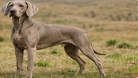

🐶 Hunderaser 2.0
Her samler vi enkel og nyttig rasekunnskap om hunder. Nå med 42 hunderaser, søk og klikkbare bilder.
⬅️ Tilbake til KunnskapssenterFinn en hunderase
Søk etter rase, opprinnelse eller egenskap.

🐶 Bichon Frisé
En glad, sosial og leken selskapshund som ofte passer godt for familier og eldre. Krever jevnlig pelsstell.

🐶 Golden Retriever
En populær familiehund som er vennlig, lærevillig og glad i aktivitet, tur og kontakt med mennesker.

🐶 Labrador Retriever
En sosial, robust og lærevillig hund. Passer ofte godt for aktive familier og mennesker som liker tur og trening.

🐶 Flatcoated Retriever
En glad og energisk retriever med mye livsglede. Trives med aktivitet, apportering og tett kontakt med familien.

🐶 Nova Scotia Duck Tolling Retriever
En smart og energisk retriever som ofte liker arbeid, trening og vann. Trenger mental og fysisk aktivitet.

🐶 Schæfer
En intelligent og allsidig brukshund som trenger tydelig trening, aktivitet og oppgaver for å trives godt.

🐶 Border Collie
En ekstremt intelligent gjeterhund som trenger mye aktivitet, trening og mentale utfordringer.

🐶 Australian Shepherd
En lærevillig og aktiv hund som ofte passer best for eiere som liker trening, tur og hundesport.

🐶 Collie
En vakker og lojal familiehund som ofte er mild, våken og glad i kontakt med familien.

🐶 Cavalier King Charles Spaniel
En mild, kjærlig og sosial selskapshund som ofte trives godt i familier og sammen med mennesker.

🐶 Chihuahua
En svært liten, våken og personlig hund. Trenger trygg håndtering, sosialisering og varme omgivelser.

🐶 Fransk Bulldog
En sosial og sjarmerende hund med mye personlighet. Trenger moderat aktivitet og oppmerksomhet på varme dager.

🐶 Mops
En sosial, morsom og hengiven liten hund. Trenger moderat mosjon og ekstra omsorg i varmt vær.

🐶 Puddel
En svært lærevillig og elegant hund som finnes i flere størrelser. Krever regelmessig pelsstell og mental aktivitet.

🐶 Dachs
En liten hund med stor personlighet. Opprinnelig jakthund, ofte våken, modig og selvstendig.

🐶 Engelsk Cocker Spaniel
En glad og sosial hund som ofte liker tur, lek og nesearbeid. Krever jevnlig pelsstell.

🐶 Engelsk Springer Spaniel
En energisk og vennlig spaniel som passer godt for aktive hjem og turglade eiere.

🐶 Beagle
En glad og nysgjerrig hund med sterk luktesans. Trenger aktivisering og trygg innkallingstrening.

🐶 Corgi
En våken, morsom og robust liten gjeterhund med mye personlighet.

🐶 Jack Russell Terrier
En liten terrier med mye energi og stor arbeidslyst. Trenger aktivitet, grenser og mental stimulering.

🐶 Bull Terrier
En kraftig og leken terrier med særegent utseende. Trenger tydelig trening og god sosialisering.

🐶 Boston Terrier
En liten og livlig selskapshund med vennlig temperament. Passer ofte godt i by og familie.

🐶 Yorkshire Terrier
En liten, våken og modig terrier med lang pels som krever stell hvis den holdes lang.

🐶 Shih Tzu
En rolig og sosial selskapshund med lang pels. Trives ofte godt som familie- og kosehund.

🐶 Lhasa Apso
En liten og selvstendig selskapshund med lang pels og våken personlighet.

🐶 Havaneser
En glad og sosial liten selskapshund som ofte passer godt i familier. Pelsen trenger jevnlig stell.

🐶 Malteser
En liten, elegant og hengiven selskapshund med hvit pels som krever regelmessig stell.

🐶 Pomeranian
En liten spisshund med stor personlighet og tykk pels som bør børstes jevnlig.

🐶 Norsk Lundehund
En unik norsk rase med spesielle egenskaper, opprinnelig brukt til jakt på lundefugl langs kysten.

🐶 Samojed
En vennlig og sosial spisshund med tykk hvit pels. Trenger aktivitet og jevnlig pelsstell.

🐶 Siberian Husky
En utholdende trekkhund som trenger mye mosjon, trygg innhegning og aktive eiere.

🐶 Alaskan Malamute
En sterk og utholdende polarhund. Trenger mye aktivitet, erfaring og tydelige rutiner.

🐶 Akita
En kraftig og lojal spisshund som trenger trygg sosialisering og erfaren håndtering.

🐶 Shiba Inu
En liten japansk spisshund som ofte er selvstendig, renlig og våken.

🐶 Rottweiler
En kraftig, lojal og arbeidsvillig hund som trenger god sosialisering og tydelig trening.

🐶 Dobermann
En elegant og aktiv brukshund som er lojal, våken og treningsvillig.

🐶 Cane Corso
En stor og kraftig hund som trenger trygg eier, god sosialisering og tydelig trening.

🐶 Weimaraner
En energisk jakthund som trenger mye mosjon, mental trening og tett kontakt med eier.

🐶 Berner Sennenhund
En stor, rolig og vennlig familiehund. Trenger plass, turer og jevnlig pelsstell.

🐶 Newfoundlandshund
En stor, rolig og vennlig hund kjent for styrke og svømmeegenskaper. Krever plass og pelsstell.

🐶 Grand Danois
En svært stor, ofte mild og rolig hund. Trenger god plass, god oppfølging og riktig fôring.

🐶 Sankt Bernhard
En stor og rolig familiehund med mye tyngde. Trenger plass, rolig mosjon og jevnlig pelsstell.
Neste oppgradering
Neste steg blir Hunderaser 3.0 med pelsstellutstyr, klotang på alle raser, sjampo, børster, sakser og plass til “Kjøpes hos”.